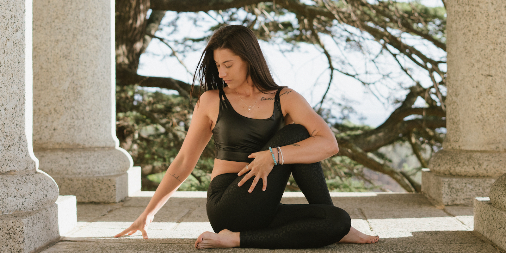

zdroj: https://insighttimer-com.translate.goog/blog/yoga-before-meditation?_x_tr_sl=en&_x_tr_tl=cs&_x_tr_hl=cs&_x_tr_pto=wapp Prostřednictvím série pohybů jóga pomáhá vyčistit dráhy pránické energie . Zde je několik jednoduchých a jemných jógových pozic, které jsou ideální pro vaši praxi předtím, než se usadíte do meditace: Pozice dítěte (Balasana): Tento jemný předklon zklidňuje nervový systém a uvolňuje napětí v zádech, ramenou a krku a zároveň podporuje introspekci. Protažení kočičí a kravské páteře (Marjaryasana-Bitilasana): Tato sekvence jemně uvolňuje páteř, podporuje flexibilitu a zlepšuje vnímání dechu, čímž připravuje tělo i mysl na meditaci. Předklon vsedě (Paschimottanasana): Tato pozice pomáhá uklidnit mysl a snížit úzkost, což usnadňuje přechod do meditativního stavu. Také protahuje páteř a hamstringy. Pozice s nohama u zdi (Viparita Karani): Ideální pro uvolnění stresu a zklidnění mysli. Tato regenerační pozice umožňuje gravitaci podpořit krevní oběh a může být obzvláště uklidňující před meditací. 5 základů pro přípravu na meditaci Těsně před sezením se vyhněte přejedení se jídlem nebo jakýmkoli stimulantům, jako je káva nebo cukr. Po jídle nebo pití kávy si dejte alespoň hodinu pauzu, než se posadíte k meditaci. Najděte si prostředí, kde je nejméně pravděpodobné, že vás bude vnější svět rozptylovat nebo rušit. Ztište telefon, zavřete dveře, případně dejte lidem kolem sebe vědět, že budete na krátkou dobu meditovat a raději byste nebyli rušeni. Ať už jste kdekoli a jakkoli dlouho meditujete, posaďte se vzpřímeně a zaujměte pohodlnou pozici. Většině z nás se doporučuje sedět s nějakou oporou zad. To proto, abychom se nemuseli soustředit na nepohodlí, které můžeme během meditace pociťovat v zádech bez opory. Pokud není u konkrétní techniky uvedeno jinak, není nutné sedět se zkříženýma nohama ani s rukama v jakékoli konkrétní poloze. Klíčem je pohodlí. Jakmile si najdeme pohodlnou polohu, dopřejte mysli přechodnou dobu ze stavu otevřených očí do stavu zavřených. To jednoduše znamená, že si necháme asi půl minuty, aby se mysl a tělo usadily do nejméně vzrušeného stavu, ať už je to cokoli. Pokud se cítíte rozrušeni nebo podrážděni, prostě to nechte být. Pokud se cítíte ospalí nebo letargičtí, žádný problém. Prostě nechte všechno být. Ať jste kdekoli a cítíte cokoli, nijak tomu nebráňte. Prostě si dovolte být v jakémkoli stavu, který přirozeně prožíváte. Poslední bod, a možná ten nejdůležitější: uvědomte si jakékoli předsudky nebo očekávání ohledně toho, co byste mohli během meditace zažít. Postoj neutrality a nevinnosti bez očekávání nebo potřeby jakéhokoli konkrétního typu výsledku zajišťuje, že ať už praktikujeme jakoukoli techniku, mysl se může přirozeně a bez násilí pohybovat směrem k uvolnění. velbloud https://joga.cz/system/3-díl/uštra-ásana, https://www.tummee.com/cs/yoga-poses/half-camel-pose-variation-hand-opposite-foot protažení horní části páteře Martin Putna: Středověkým Íránem: Renesance v Isfahánu a rokoko v Šírázu, Háfez a Sádí, mystika a erotika.